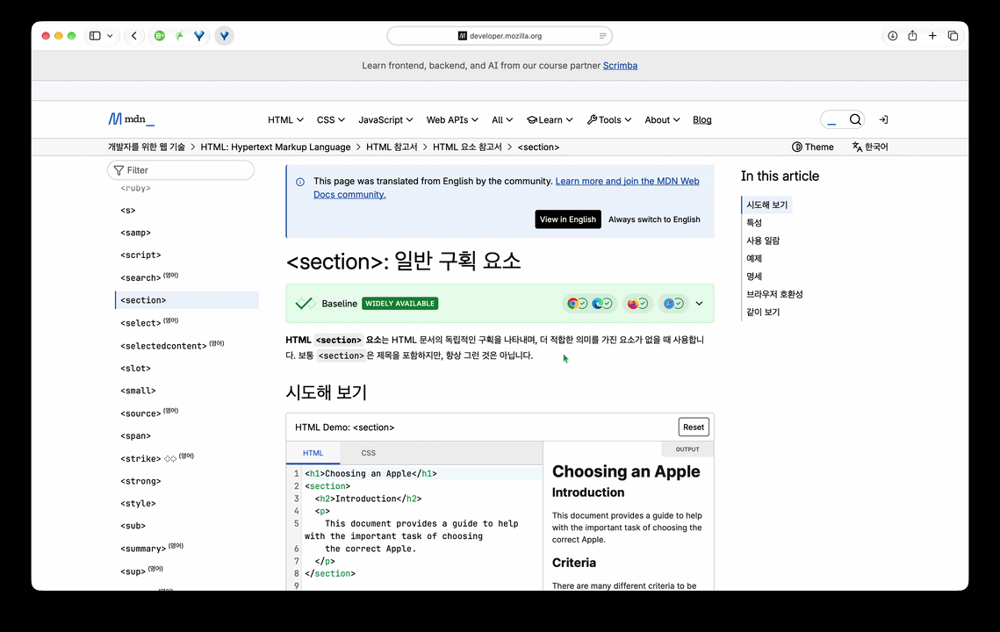

September 20, 2026
이번 table/table에서 웹에서의 ‘모드’를 주제로 작업할 때 어떤 걸 다루면 좋을지 행복한 고민을 했다. 사실 그냥 재미있을 것 같으니까! 기기의 밝기나 플래시라이트를 켜버리는 요상한 모드를 만든다던가… 다크 모드랑 라이트 모드만 대뜸 있는 웹을 망가트려서 요상한 모드를 만들어 볼까도 했었다. 그런데 가만 생각해보니 그게 정말 ‘모드’를 다루는 일인지 의문스럽기도 하고, 부족한 웹 공부를 이번 기회에 하는 것이 좋지 않을까도 싶어 이번에는 읽기 모드 자체를 다루면 지루하지만서도 재밌겠다고 생각했다!

웹 페이지의 여러 복잡한 행과 열, 디자인, 삽입된 이미지와 광고, 텍스트, 버튼 등 ‘읽기’에 방해될 수 있는 요소들을 들어내고 ‘읽기’에 최적화 된 요소들만 남겨 화면에 다시 표시하는 기능이다. 26년 들어서는 보통 웹 브라우저에서 기본적으로 지원하는 기능이다.
기호에 맞게 원하는 서체나 글자 크기로 조절할 수 있고, 배경 색상을 바꿀 수도 있다. 마치 전자책 커스터마이징처럼…!
읽기모드는 2010년 Apple WWDC10에서 보도자료로 공개한 Safari 5에서 처음 발표되었다. HTML 5 최신 기능들을 대거 추가하면서 함께 *흥미로운* 기능으로 추가되었는데, 당시 보도자료의 일부를 발췌한 내용은 이렇다.
Apple Releases Safari 5
SAN FRANCISCO, June 7
Safari Reader makes it easy to read single and multipage articles on the web by presenting them in a new, scrollable view without any additional content or clutter. When Safari 5 detects an article, users can click on the Reader icon in the Smart Address Field to display the entire article for clear, uninterrupted reading with options to enlarge, print or send via email.
— Safari 읽기모드는 웹에 있는 단일 혹은 다수의 문서들을 복잡한 추가 콘텐츠 없이 스크롤하며 편리하게 볼 수 있게 해주는 새로운 표시 방법입니다. Safari 5는 문서를 감지하면 사용자가 스마트 주소 필드에서 ‘읽기’ 버튼을 클릭해서 깨끗하게 표시할 수 있도록 만들고, 읽는데 방해 하나 없이 문서를 확대하거나 인쇄하거나 또 이메일로 보낼 수 있게 해줍니다.
Safari에서 꽤나 큰 호응을 얻자 Mozilla Firefox, Google Chrome 등 다른 웹 브라우저에서도 읽기 모드를 기본 기능으로 제공하기 시작했고, 지금에 이르고 있다!
결론부터 말하자면 필수적으로 고려할 필요는 없다. 사실 읽기 모드는 각 페이지 별로 목적에 따라서 전혀 필요하지 않는 경우도 있고, 이런 저런 재미난 웹 구성을 모조리 재단해버리는 잔인한 기능이기도 하기 때문이다. 웹 페이지의 주인은 보통 읽기 모드를 달가워 하지 않는 경우도 많고.
(하지만 난 좋다)
더군다나 읽기 모드는 웹 표준이 아니라서 공식 문서가 따로 존재하지도 않는다😢. 브라우저 마다 문서를 인식하는 방법과 알고리즘이 조금씩 다르고, 따라서 읽기 모드를 고려하여 웹 페이지를 구성하지 않았더라도 읽기모드가 잘 작동하는 경우가 있다.
읽기 모드 알고리즘은 문서를 읽는데 전혀 사용되지 않을 HTML 마크업은 자동으로 지우고, 그 외에는 일정한 규칙에 의해 높거나 낮은 점수를 부여해서 ‘읽을 문서’인지 아닌지 구분 해버린다. 따라서 아래 사항을 준수하더라도 제대로 작동하지 않을 수 있지만, 다음과 같은 방법을 통해서 알고리즘의 선택을 받을 확률을 높일 수 있다!
<!DOCTYPE html> 선언과 <html>, <head>, <title>, <body> 같은 기본 뼈대를 이루는 태그를 제대로 구성해야한다.
<h1> … </h1>, <div><p> … </p></div>
예를 들어 <h1>과 같은 제목 태그들은 계층적으로 다른 제목을 의미한다. 따라서 <h1><h4> … </h4></h1>처럼 제목 태그 안에 또 다른 제목 태그를 사용해서 구조를 짜지 않도록 하는 것이 좋다. <h1></h1><h4></h4>처럼!
헤더에는 <header>를, 탐색 메뉴에는 <nav>를, 된장찌개를 다루다가 오차즈케를 다루는 것처럼 명확하게 구분된 내용을 담을 땐 <section>을, 서로 다른 블로그나 기사 등을 담는 등의 주제 별로 독립된 부분에는 <article>을 쓰는 것처럼 말이다.
<a> 태그를 쓰든, <div> 태그를 쓰든, 충분한 내용이 있으면 알고리즘이 “아, 이거 읽을 내용인가 보다!”하고 점수를 많이 줄 수 있다.
StackOverFlow에서 동일한 질문에 이론상 ‘아무 것도 하지 말라!’라는 말까지 있을 정도로 전적으로 브라우저의 기능에 의존해도 된다고 답하는 일도 있지만, 어쩌면 할 수 있는 것에 조금이라도 힘을 써두는 것도 인공지능 세상에서 인간이 할 수 있는 인간다운 여러가지 일이 아닐까 싶다. 그 중 하나가 읽기 모드를 고려하는 일이고!
개인적으로 읽기 모드는 가끔 여러가지 문서를 오가면서 글을 읽어야 할 때 정말 많은 도움을 받고 있다. 가끔 페이지의 테마나 멋 등을 위해서 읽기 힘들게 만들어 둔 페이지들이 있기 때문이다…. 하지만 읽기 모드가 제대로 작동하지 않아서 어쩔 수 없이 원본 웹 페이지 상태에서 읽어야할 때가 가끔 있다. 조금 더 읽기 쉬운 페이지들이 많아지길 바라며 글을 마치고자 한다!